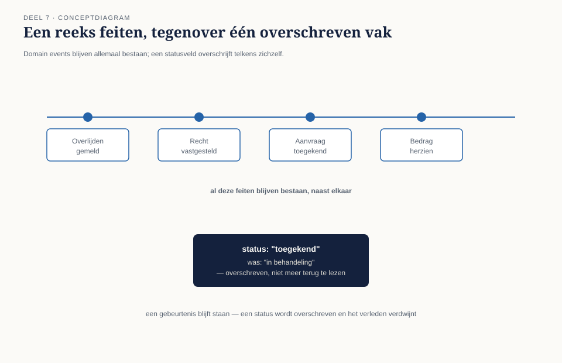
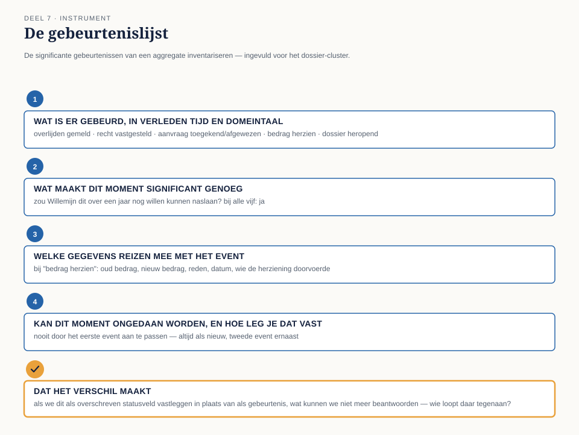

Deel 7 — Domain event: wat er is gebeurd, onveranderlijk
Reader · Ductus-cursus Domain-Driven Design · niveau 1 (fundament) · deel 7 van 30
7.1 Waar dit deel over gaat
Deel 6 sloot af met een vraag die nog openstond. Het team had vastgesteld waar de consistentiegrens van het dossier ligt en wie de aggregate root is — het bedrag van een vaststelling kan nooit meer zonder onderbouwing ontstaan. Maar Tijmen wees er zelf op: het team legt op dit moment nog steeds alleen de huidige stand vast. Een bedrag wordt bijgewerkt, een status wordt overschreven van “in behandeling” naar “toegekend”. Wat er dan verdwijnt, is precies wat Saïda al twee keer eerder heeft gevraagd: kun je mij over een jaar nog uitleggen waarom dit dossier zo is afgehandeld?
Dit deel geeft daar een antwoord op, met de vierde tactische bouwsteen: het domain event.
Aan het eind van dit deel kun je:
- in eigen woorden uitleggen wat een domain event is en waarom het draait om een onveranderlijk feit uit het verleden, niet om een bijgewerkte status;
- voor een aggregate herkennen welke momenten in zijn levensloop het vastleggen als gebeurtenis verdienen;
- een domain event correct benoemen (verleden tijd, domeintaal) en bepalen welke gegevens erbij horen;
- met de gebeurtenislijst de significante gebeurtenissen van een aggregate inventariseren en verdedigen.
7.2 De casus: het dossier dat niet meer terug te lezen is
Uit het casusdossier: het team heeft in deel 6 vastgesteld dat het dossier de aggregate root is, met de vaststelling en haar onderbouwing binnen de grens.
Willemijn brengt een dossier mee dat ze die ochtend heeft moeten uitzoeken voor een bezwaarschrift. Een nabestaande is het niet eens met het toegekende bedrag en wil weten waarom het lager uitvalt dan ze had verwacht. Willemijn heeft twintig minuten nodig gehad om te reconstrueren wat er is gebeurd, omdat het huidige systeem alleen laat zien wat het bedrag nú is — € 498,15 — zonder dat er iets terug te vinden is over het bedrag dat er eerst stond, of waarom het is aangepast.
“Ik weet dat het bedrag is gecorrigeerd,” zegt Willemijn. “Dat zie ik aan een notitieveld waar een collega drie regels vrije tekst heeft ingetypt, drie maanden geleden. Maar het oorspronkelijke bedrag staat nergens meer. Het is overschreven. Als de nabestaande vraagt ‘wat was het dan éérst’, kan ik dat niet meer laten zien — ik kan het alleen navertellen uit een notitie die net zo goed weg had kunnen zijn.”
Saïda knikt. “Dit is precies waar ik het steeds over heb. Niet omdat ik wantrouwig ben, maar omdat ik bij een bezwaar moet kunnen aantonen wat er wanneer is gebeurd, in welke volgorde, en op basis waarvan. Een huidige stand is daar niet genoeg voor.”
Daan denkt terug aan deel 6. “We hebben de aggregate zo ontworpen dat een bedrag nooit zonder onderbouwing kán bestaan. Maar dat gaat over de huidige, geldige toestand. Het zegt niets over wat er drie maanden geleden gold, of over het feit dat er een correctie is geweest.”
“Precies,” zegt Tijmen. “We hebben de consistentiegrens goed. We hebben alleen nog niets dat onthoudt wát er binnen die grens is gebeurd.”
Rutger, die het gesprek een tijdje heeft aangehoord, stelt de vraag die het hart van dit deel wordt: “Wat als we, in plaats van een veld te overschrijven, gewoon opschrijven wát er gebeurde? Niet ‘bedrag = 498,15’, maar ‘op deze datum is het bedrag herzien van 512,40 naar 498,15, om deze reden’. Dat zin je niet over — die blijft gewoon staan.”
7.3 Wat een domain event is
Een domain event is een feit uit het domein dat al heeft plaatsgevonden, en dat voor het domein betekenisvol genoeg is om vast te leggen. Het is geen aankondiging van iets dat nog moet gebeuren, en geen technische registratie van een systeemactie — het is de neerslag van iets wat een domeinexpert, als je het hem zou vertellen, zou herkennen als “ja, dat is er gebeurd”. Anders dan een veld dat de huidige stand weergeeft, verandert een domain event nooit meer nadat het is vastgelegd: het is, per definitie, verleden tijd.
Dat is het verschil dat Rutger in de casus te pakken heeft. Een statusveld beantwoordt de vraag “wat is het nu”. Een domain event beantwoordt de vraag “wat is er gebeurd” — en die tweede vraag blijft, anders dan de eerste, voor altijd hetzelfde antwoord houden. Het bedrag van vandaag kan morgen weer wijzigen. Het feit dat het bedrag op 14 mei is herzien van € 512,40 naar € 498,15, met als reden een correctie op het bijzonder partnerpensioen, verandert nooit meer — dat is precies wat er op 14 mei is gebeurd, en dat blijft zo, ook als er op 20 juni weer een nieuwe herziening volgt.

Drie kenmerken
Een domain event heeft drie kenmerken die het onderscheiden van een gewoon stukje data.
Het staat in de verleden tijd. “Overlijden gemeld”, niet “overlijden melden”. “Recht op partnerpensioen vastgesteld”, niet “recht vaststellen”. Dit is geen stijlkwestie: de verleden tijd dwingt je om het moment vast te leggen waarop iets werkelijk is gebeurd, in plaats van een instructie of een wens die nog moet worden uitgevoerd.
Het is onveranderlijk. Eenmaal vastgelegd, wordt een domain event nooit meer aangepast of verwijderd. Blijkt een vastgelegd feit later onjuist — het bedrag bleek verkeerd berekend — dan wordt dat niet rechtgezet door het oorspronkelijke event te wijzigen, maar door een nieuw event vast te leggen dat de correctie zelf beschrijft: “Bedrag herzien”. Zo blijft zichtbaar dat er ooit een ander bedrag gold én dat er een correctie heeft plaatsgevonden — twee feiten, geen overschreven veld.
Het draagt de gegevens die op dát moment golden. Een domain event bevat niet alleen “wat” er gebeurde, maar ook de relevante gegevens van dat moment: het bedrag, de reden, de datum. Zonder die gegevens is het event een kale mededeling zonder bewijskracht — precies het probleem waar Willemijn tegenaan liep met het notitieveld dat alleen “gecorrigeerd” zei zonder het oorspronkelijke bedrag.

Waar domain events vandaan komen
Een domain event ontstaat op het moment dat er, binnen een aggregate, iets gebeurt dat het domein als significant beschouwt — meestal precies op de momenten waarop de aggregate root, uit deel 6, een wijziging bewaakt of toestaat. Niet elke technische wijziging verdient een eigen event: het draait om de vraag of een domeinexpert dit moment zou herkennen als “er is iets gebeurd” in plaats van “er is een veldje aangepast”. Een getypte spelfout die iemand meteen corrigeert in een naam, is geen domain event. Een overlijden dat wordt gemeld, een recht dat wordt vastgesteld, een aanvraag die wordt toegekend of afgewezen — dat zijn stuk voor stuk momenten die Willemijn, Saïda of Corné zonder aarzelen zouden herkennen als iets dat is gebeurd.
De vraag die daarbij helpt, is dezelfde die Saïda in deel 6 al stelde, nu toegepast op tijd in plaats van op consistentie: als iemand mij over een jaar vraagt wat hier is gebeurd, is dit dan een van de dingen die ik hem zou vertellen? Zo ja, dan is het een kandidaat-domain event.
Wat een domain event niet is
Twee veelvoorkomende verwarringen liggen op de loer.
Een domain event is geen technische logregel. “Record bijgewerkt om 14:32 door gebruiker jvdberg” is een technisch feit over het systeem, geen domeinfeit. Het zegt niets over wát er inhoudelijk is gebeurd en zou een domeinexpert niets zeggen. Een domain event spreekt de taal van het domein: “Recht op partnerpensioen vastgesteld”, niet “veld status gewijzigd naar waarde 3”.
Een domain event is geen opdracht. “Ken partnerpensioen toe” is een instructie, gericht op de toekomst — iets wat nog moet gebeuren en dat nog kan mislukken of worden geweigerd. Pas het moment waarop die toekenning daadwerkelijk heeft plaatsgevonden, levert het event op: “Partnerpensioen toegekend”. Het onderscheid tussen een opdracht en een gebeurtenis is precies het onderscheid tussen vragen en vertellen — en alleen het laatste hoort onveranderlijk vastgelegd te worden.
7.4 De werkvorm: de gebeurtenislijst
Het instrument van dit deel is de gebeurtenislijst: een sjabloon waarmee je, voor een aggregate, de significante gebeurtenissen in zijn levensloop inventariseert en voor elke gebeurtenis vastlegt wat hij betekent.
Het invulblad
Voor een gekozen aggregate doorloop je, per kandidaat-gebeurtenis, vier vragen.
Wat is er gebeurd, in verleden tijd en in de taal van het domein? Formuleer de naam zoals een domeinexpert het zelf zou zeggen. Toets: zou Willemijn, Saïda of Corné deze naam herkennen zonder uitleg?
Wat maakt dit moment significant genoeg om vast te leggen? Niet elke wijziging verdient een event. Onderbouw waarom een domeinexpert dit, over een jaar, nog zou willen kunnen naslaan.
Welke gegevens horen bij dit moment, en horen dus mee te reizen met het event? Som de gegevens op die nodig zijn om het feit zelf te begrijpen, zonder dat je ergens anders hoeft te kijken — het bedrag, de reden, de betrokken partij, de datum.
Kan dit moment ooit “ongedaan” worden, en zo ja: hoe leg je dat dan vast? Beschrijf, voor gebeurtenissen die later gecorrigeerd kunnen worden, welk tweede event die correctie zou vastleggen — nooit door het eerste event aan te passen.
Het veld dat het verschil maakt
Onder deze vier vragen staat het afsluitende veld:
Dat het verschil maakt: als we dit moment vastleggen als een overschreven statusveld in plaats van als een eigen gebeurtenis, wat kunnen we dan straks niet meer beantwoorden — en wie loopt daar als eerste tegenaan?
Zoals bij de eerdere instrumenten gaat dit veld niet over het benoemen van de gebeurtenis zelf, maar over de concrete consequentie van het weglaten ervan. “Dit is een belangrijk moment” is een constatering; “als we niet vastleggen dat het bedrag op 14 mei is herzien, kan Willemijn bij een bezwaar niet meer laten zien wat het bedrag vóór de herziening was, en is zij degene die dat als eerste merkt wanneer een nabestaande om uitleg vraagt” is een inzicht dat de keuze verdedigbaar maakt.

7.5 Terug naar de casus
Het team past de gebeurtenislijst toe op het aggregate uit deel 6: het dossier.
Welke gebeurtenissen horen in de lijst? Het team loopt de levensloop van een dossier langs, van aanmelding tot afhandeling. Willemijn begint: “Overlijden gemeld” — het moment waarop een melding, via welke route dan ook, het dossier opent. Saïda vult aan: “Recht op partnerpensioen vastgesteld” — het moment waarop is bepaald wie de partner in de zin van het reglement is, en welk bedrag daarbij hoort. Vervolgens, apart daarvan: “Aanvraag toegekend” of “Aanvraag afgewezen” — het formele besluit, dat niet automatisch samenvalt met de vaststelling zelf, omdat er tussen vaststelling en besluit nog een compliance-check van Saïda kan liggen. En, naar aanleiding van het incident dat de sessie opende: “Bedrag herzien” — een apart, tweede event, niet een aanpassing van het eerste.
Rutger brengt een vijfde gebeurtenis in die het team eerst over het hoofd ziet: “Dossier heropend”. Bij twee van de uitzonderingen uit het casusdossier — een nabestaande die niet traceerbaar is, of een buitenlandse overlijdensakte die eerst gelegaliseerd moet worden — blijft een dossier soms weken of maanden “open” staan en kan het later weer in beweging komen. Zonder een apart event voor dat moment zou het net zo goed lijken alsof het dossier de hele tijd actief in behandeling was, terwijl er in werkelijkheid een lange stilte tussen zat.
Significantie. Voor elk van deze vijf toetst het team de vraag: zou Willemijn dit over een jaar nog willen kunnen naslaan? Bij alle vijf is het antwoord ja — stuk voor stuk momenten waarop Saïda, bij een bezwaar, precies wil kunnen reconstrueren wat er gebeurde en wanneer.
Gegevens per gebeurtenis. Bij “Bedrag herzien” legt het team vast: het oude bedrag, het nieuwe bedrag, de reden van de herziening, en de datum. Saïda dringt aan om ook vast te leggen wíe de herziening heeft doorgevoerd — niet als schuldvraag, zegt ze uitdrukkelijk, maar omdat een bezwaarprocedure soms vraagt wie op basis van welke informatie een beslissing heeft genomen.
Correcties. Bij “Recht op partnerpensioen vastgesteld” stelt het team vast dat een latere, andere vaststelling nooit de eerdere overschrijft, maar er als nieuw event naast komt te staan — precies zoals het team in deel 6 al had vastgesteld voor de vaststelling als entity, nu doorgetrokken naar de gebeurtenis die dat moment markeert.
Bij het afsluitende veld schrijft Willemijn: “Als we ‘Bedrag herzien’ niet als eigen gebeurtenis vastleggen, kan ik bij een bezwaar niet meer laten zien wat er is veranderd en waarom — ik ben degene die dat dan, net als vanochtend, uit een los notitieveld moet reconstrueren, en de nabestaande is degene die daar het langst op moet wachten.”
Rutger formuleert de conclusie die voor hem het scherpst blijft hangen: “Ik dacht steeds dat we een systeem bouwen dat onthoudt wat er nú waar is. We bouwen een systeem dat onthoudt wat er allemaal is gebeurd. Dat is nu wat er waar is, is daar gewoon de optelsom van.”
Tijmen sluit af met een blik vooruit. “We weten nu waar de grens ligt van wat samen moet kloppen, en we weten nu hoe we vastleggen wat daarbinnen is gebeurd. Maar we hebben het nog steeds niet over wáár in de code dit allemaal moet wonen. Wie berekent straks de samenloop met het UWV? Wie maakt eigenlijk een nieuw dossier aan zodra er een melding binnenkomt? En als Willemijn een dossier wil inzien, hoe krijgt ze dat dan terug uit alles wat we hebben vastgelegd?”
Vooruit naar deel 8. Dat is de vraag van het volgende deel: waar horen de overige bouwstenen thuis die het Nabestaandenloket-model nodig heeft om daadwerkelijk te kunnen werken? Het team maakt kennis met domain service, factory en repository.